The first national survey of innovation and entrepreneurship living-learning programs examined recruitment, operations, student ventures, programming and more.
Living-learning programs (LLPs), also known as living-learning communities, bring together undergraduate students for a unique experience that combines residence and exposure to academic and extra-curricular programming designed especially for them. Entrepreneurship and Innovation themed LLPs have been growing in popularity at universities across the country. The goals of these LLPs are to enhance the creative-thinking and problem-solving skills that will be necessary for students to prosper in any industry, as well as provide tools and opportunities for students to start ventures.
The University of Maryland, the University of Illinois at Urbana-Champaign, and Epicenter have conducted the first national survey on innovation and entrepreneurship LLPs, gathering details on recruitment, operations, programming, and more. Data was gathered from a total of 16 respondents from 13 living learning program at 12 institutions around the country.
Survey Results
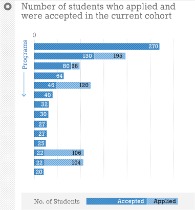
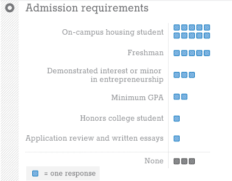
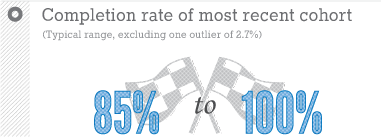
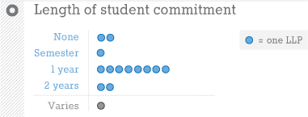
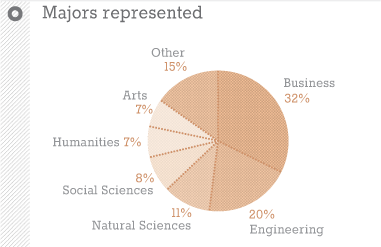
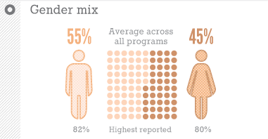
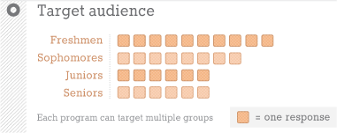
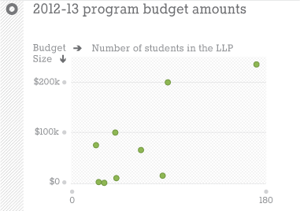
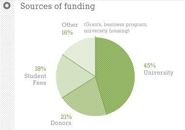
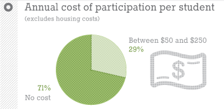
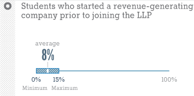
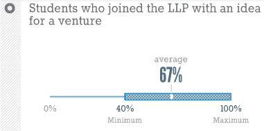
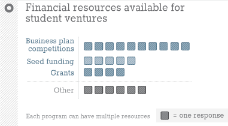
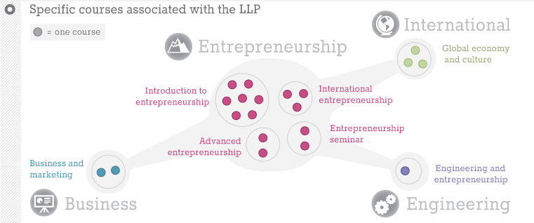
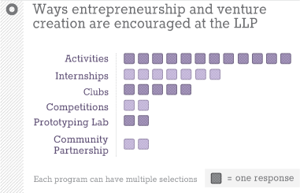
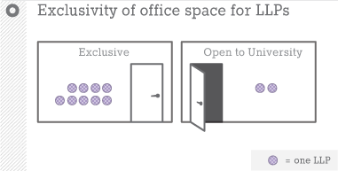
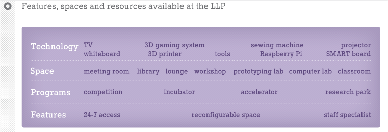
Program Locations and Overviews
Graphics by Halftone.co for Epicenter